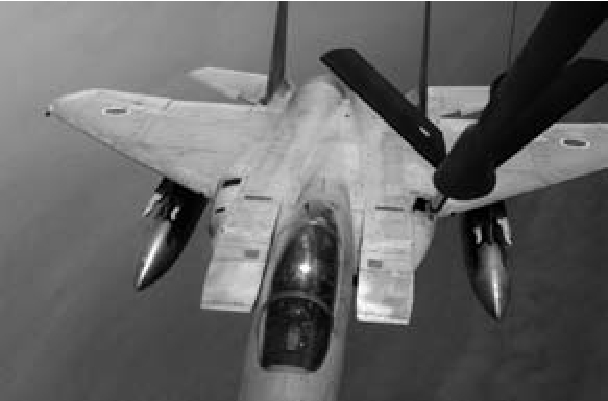
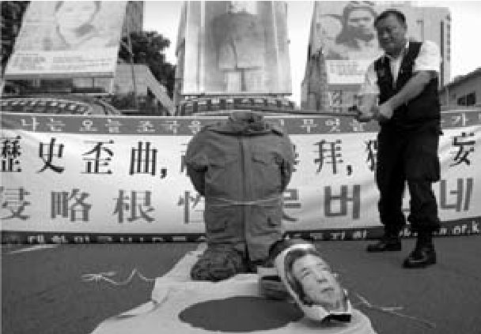

对于冷战中的认同问题，日本多少有所内省，因为日本努力承受“超克现代性”的企图和太平洋战争的战败带来的后果。然而，1990年代的日本不再躲在美国的保护伞下，而是起而投身于新的后冷战国际体系。虽然简单地把1990年代早期比作1850年代中期有些夸大，但从“日本在上述两个时期都在视野上实现了实实在在的转变”这样的观点中，还是能获取一些启示：在这两个时期，日本原本主要关注国内议题，后来转而关心自身在新的世界秩序中的认同和角色。事实上，这两个时期的日本，是在美国及新兴国际社会的双重要求下，被驱赶着“走出去”——1854年是佩里的“黑船”和帝国贸易制度在起作用，1991年则是时任美国总统布什在向日本施加压力，要求日本派遣自卫队加入联合国授权的驻科威特部队。而日本对于这些外压（gaiatsu）的反应都是矛盾的、不确定的、迟缓的，因为决策者和公众在争论日本应该如何以及是否应该在国际舞台上承担新的责任。1991年，日本在巨大的压力下推诿躲闪，最后没有出兵，而是甩出了130亿美元。
自1947年起，日本的外交政策显得顺服和低调，著名的宪法“和平条款”（第九条）为日本对安全事务的态度定下了基调；也就是说，日本未曾参加任何重大的军事行动，且名义上被禁止这样做。《日美安保条约》有效地隔绝了日本，使日本对它在国际体系内“高级政治” [1] 领域的角色不必有过多想法。
日本是世界上第一个，也是唯一一个遭受过原子弹轰炸的国家，这种可怖的经历后来导致了所谓的“核过敏症”；日本的“和平宪法”、美国的监管，再加上这种“核过敏症”，在战后时期汇流成一种“反军国主义”乃至和平主义的主流话语。在国际舞台上，日本试图将自身表述为象征“民间的”或“商贾的”力量，自觉且慎重地回避军事方面的外在表现和强国地位。在整个冷战期间，这对日本的邻国都是好消息，这些邻国出于不难理解的理由，对再度武装的日本抱有警戒之心。然而，在1970和1980年代，针对日本的“和平主义”认同，原本小范围的批评渐趋普遍，因为日本经济的泡沫膨胀到了惊人的程度：和平主义和核过敏症开始变得像是托词，企图将日本转化成它主导的侵略历史的受害者，以此拖延必要之举，即为日本在20世纪上半叶的行径向邻国道歉。
换言之，1990年代早期令日本的国际认同问题分外凸显：对于国际问题，日本是否真是一个有意识地选择避免军事解决的和平主义国家？还是这种表象仅仅是美军占领及之后的《日美安保条约》的副效应？富有影响力的政治家小泽一郎 [2] 强势地提出了日本国内的一项重要议题，即日本表面上的反军国主义实际上是否导致它在现代世界中成为一个不正常国家。在名作《新日本蓝图》（1994年）中，小泽呼吁日本应最终摆脱“战后心理”、不要再关注太平洋战争的后果，以成为一个“正常国家”。他所说的“正常国家”，是指在国际体系中承担的责任与其经济地位相称的国家。书中一个广为人知且激起争论的例子是，小泽声称日本作为慷慨缴纳联合国会费、数额仅次于美国的国家，应当在联合国安理会获得永久席位。具体而言，他要求日本修订宪法，以允许向海外派遣自卫队参与联合国的维和行动或其他的国际安全机制。事实上，小泽是日本1992年通过的《联合国维持和平活动合作法》的主要谋划人之一，尽管当时已赶不上海湾战争，该法到底为自卫队（有限制地）参与联合国维和行动开了绿灯。日本在该法之下的第一项任务是1992年开赴柬埔寨。
日本欲在国际上成为“正常国家”——自1990年代早期起，这一问题已经遍布政治、社会和文化领域，并且至今未获解决。在一些评论人士看来，可以就“日本的双生缺欠”来有效地表述这一难题：首先，日本缺乏“正常”的能力（指一支强有力的军队，配以使用军队的法律机制和社会意愿）；其次，日本在国际体系中缺乏“正常”的合法性（指在“学会面对过去”和向邻国道歉这两方面，日本显然不合格）。
事实上，日本的能力缺欠在某种程度上是一种错觉。它的自卫队是世界范围内科技最先进的军事力量之一。尽管日本维持严格的“无核”军备政策，但它早就具备建造此类武器所需的技术实力，并且拥有航天计划和必要的运载技术。日本确实没有能力建立一支针对海外的侵略力量，但它的防御能力却不亚于其他任何国家；它还拥有一系列“已露端倪”的技术，能够助力日本对亚洲大陆实行先发制人的打击。简而言之，尽管它的自卫队（就人员数量和支出占国内生产总值不到1%而言）规模不大，“非军事”的日本却是亚洲地区最具威力的国家之一。

图15 日本航空自卫队的F-15战斗机正在注油
换言之，日本“能力缺欠”的真正症结在于法律和文化，而不在于物质条件。小泉纯一郎在其首相任期内制定了《反恐特别措施法》（2001年），使得日本能够在第二次海湾战争期间部署自卫队支持在阿富汗和伊拉克的美军；自此以后法律上限制日本军事行动的屏障已被严重削弱。事实上，日本对“和平宪法”的变通阐释与宪法第九条之间存在的差距，已经引得许多人要求修订宪法本身，以使宪法同现实相一致。这种意见常常导致悲观的指责，认为日本表面上的“和平主义”更多地是着眼于公共关系而非实质性的，认为日本出于自身的利益正固守着它自己构造的二战受害者形象。
我们于是面临日本的“合法性缺欠”问题，自1990年代至今，这就一直是个核心的、不安定的、普遍的议题。从许多方面看，它可以归结为一种指责，即日本和日本人是在以某种方式否认他们自己的历史，或者说由于冷战期间来自美国的特殊扶持，他们未能“学会面对过去”。于是，冷战的终结就提供了契机，使议题暴露出来并有望得到解决；事实上，该议题将日本当代国际角色的合法性同它检省太平洋战争责任的能力问题联系到了一起。由于该议题对认同和现代性这两个主题来说极为核心，并且在当代日本依然“悬而未决”，我们当在此作些讨论。
问题的关键在于，许多评论人士和实践者作出了宽泛的推测，认为德国（及德国人）似乎已经能够面对他们在二战中犯下的暴行（且已表示了忏悔），而日本（及日本人）却还没能做到。
然而有趣的是，在整个1990年代——这一时期的特征被沃尔·索因卡 [3] 称为全球性的“千年之交赎罪热”——日本是发起道歉、上演赎罪次数最多的国家之一。1990年韩国总统卢泰愚访问日本时，即位不久的天皇明仁（及时任日本首相海部俊树）向卢泰愚作出了引发争议的表述；1995年适逢日本战败50周年，村山富市首相发表了内容详尽的谈话；1998年10月，小渊惠三首相以书面形式（为日本在殖民统治韩国期间的暴行）向韩国总统金大中道歉。
尽管有上述重要且具有实质性的进展——既在（1995年南非真相与和解委员会成立后）忏悔与和解的国际话语又 在日本的行动方面——但仍然留有一种印象，即日本还没有表现出（甚或经历过）充分的忏悔。那么，在如此之多的证据有悖于这种印象的状况下，我们应当如何理解这种印象的持续存在？
对于这个问题，日本人有一种最简单的政治答案，即仅仅以文字游戏来暗示问题根本不在日本，而在于日本的邻国拒绝接受日本人的忏悔、拒绝向前看。犬儒论调能找到的一个简单依据就是，中国或韩国只要拒绝承认“日本终于走出了漫长的战后时期”，就能够在经济和政治方面继续受益。在今日某些日本舆论中，必定能见到这种对于中韩两国动机的阐释。
另一种更为“日本中心”的答案则围绕“忏悔的实际意味”展开。犬儒论调可能会提出一种常见的异议，即日本虽然道过很多次歉，但它从未真心感到抱歉 。也就是说，日本的道歉完全是政治行为，在道德层面上毫无忏悔可言；日本人在某种意义上是不真诚的。对这种基于假设的（然而又是普遍的、为人熟知的）犬儒论调来说，日本人道歉并非是试图获得原谅——他们并不为历史上的错误感到羞耻，他们只是在凭权宜之计强入未来。
这种关乎心理的批评暗含把民族国家拟人化的意思，我们搁置（至少是现下先搁置）这个略有些麻烦的问题；还有一种单纯的还击，称“日本的道歉当然是政治行为，因为日本是个国家（而不是人），国家的所有行为都具有政治性”，对此我们也不作讨论。将日本的忏悔视作一种“角色扮演游戏”的观点，确实为我们观察问题提供了一些理论上的启示。尤其是，自1990年代中期至后期，有一种活跃的公众讨论也从这些问题重重的心理学角度来阐述此问题。
在很多方面，全球性的“千年之交赎罪热”是一场讲述事实、表达真诚、昭示历史，旨在祛除历史邪恶的热潮。根据弗洛伊德的观点，一段被压抑的过去似乎会给“集体无意识”留下“无法抚平的伤痕”，掩盖了为助益“身体政治”而必须清理的受感染创口。此观点一个有趣的地方是，它是以现代的单一自我观念为基础，固执地否认被看作是病态的（人格分裂）或政治萎缩的（文化失忆）。由于种种原因，这一关于自我的观念（或者说，尤其是关于国家的观念）——特别是在全球语境之下——是极为可疑的。
然而，早在1970年代，日本的心理学家岸田秀就创立了理论，把现代日本的状况归纳为精神分裂。1990年代，岸田的观点为加藤典洋接受；加藤饱受争议，同时又很有市场，他同样将日本战后的“病症”“诊断”为精神分裂症，有力地论证说，战后美军占领日本时，日本存在内在矛盾，这种矛盾令日本的“人格”确确实实地分裂成了内外两个自我。在他看来，战后日本被置于进退两难的境地，一方面需要实现民主，一方面发现民主是由原先的敌人强加的。在其名作《日本的无思想》（1999年）中，他认为上述困境导致“公共日本”将美国的欲望和指令（尤其是和平主义和民主）纳为己用，但“私下日本”仍然保持着有分歧的且常常是矛盾的国家主义自我认识，其中带有帝国时期的一些残存因素。
加藤暗示，尽管这种“分裂的”解决方案或许合理且有效（也就是说，它令日本在冷战期间获得美国的保护、得以繁荣），但日本付出了巨大的代价：战后日本已经罹患精神疾病。在他标志性的文章《败战后论》（1997年）中，加藤发起了所谓的“历史主体论争”，这是日本在1990年代最严肃、最重要的思想论争。加藤在文章中说，在冷战期间，日本依赖美国的宠爱，当时日本的精神分裂症或许是合理的、可以理解的，但现在则早该诊断并治疗这一在过去的50年间折磨日本的病症。加藤认为，日本的精神分裂状况阻碍战后日本充分发展出可借以面对自身战时经历的连贯的、现代的历史主体性，公共日本（由于追随美国，因而被迫跟风谴责自身的历史）和私下日本（存在于反动的、国家主义的阴影中，见不得光）都未能真诚地或全面地与日本过去实际发生的事件，包括战争期间日本犯下的暴行对话。
这样，历史主体论争的任务就是设法构建一个现代的、可靠的、单一的、非病理性的国家主体，这一主体将能为其自身的历史罪过承担责任。丸山真男和战后早期马克思主义者之间曾经有过一场关于所谓主体性（shutaisei）的争论，加藤的见解显然是争论的延伸。丸山在那场争论中的意见十分有力、很有影响；他说，由于缺乏发展到合适程度的现代主体意识（尤其是缺乏可供主体参与的、活跃的公共空间），战时的日本人未能理解自身在反抗帝国主义国家方面的责任。在丸山看来，这导致了一种“无须负责体系”，使得日本在对其行为毫无控制感、责任感的状况下“滑入战争”。他认为，既已到了1946年，战后日本最至关重要的任务就是发展一种现代意义上的主体性，妥当地、负责任地连接起公共和私下。否则，日本的民主就会永远停留在肤浅的、制度化的虚饰上。
加藤在1990年代引起的争议表明，在许多非常重要（并且相当根本的）层面上，日本人的战后忏悔确实靠不住：日本在公开场合的忏悔不过是它移用的、“亲美的”、政治正确人格的一个侧面。1990年代并非“千年之交赎罪热”中表达真诚忏悔的高潮，而是代表了一场真正的（甚至是冷漠的）伪善危机。
多少有些不幸的是，加藤的历史主体论争几乎与一批右翼历史修正主义者的出现同时发生，其中包括藤冈信胜（炮制了1997年出版的《教科书没有讲述的历史》）及漫画家小林善纪。表面上，加藤和这些右翼似乎是指向了同一个议题——呼吁要有新的、“日本自己的历史意识 ”。然而，加藤是呼吁真正（即使是有争议地）直面日本最黑暗及最可耻的时刻（尽管是通过公开地重新评价日本自身 在那一时期的受难 及那一时期的创伤感），藤冈和小林那时却（现在仍然是）更关注把二战篡改成某种日本人应当引以为豪的经历。日本的邻国及日本国内的大部分人对于这种动向自然很敏感。
此处关系到一项经常性的、邻接的指责，即由于一些高调的政治人物作出的那种疑似国家主义的公开行为本身，日本的忏悔不可能真诚。这里我们所说的公开行为是指时任首相小渊惠三在1999年给予了太阳旗和《君之代》（国歌）官方认可； [4] 前首相小泉纯一郎对靖国神社的参拜臭名昭著，他还企图修改被认为是“不日本的”《教育基本法》（1947年）以在学校中开设“爱国心”课程； [5] 前首相安倍晋三助推历史修正主义教科书，还呼吁修改宪法第九条以允许日本重整军备（或称使之合法化）。
有一个关键问题主导着对上述情形的反应，即它们是构成了公开的国家行为，还是一名日本公民的个人行为。于是，意味深长的是，自1980年代的中曾根康弘首相开始，日本的政治人物总是坚称（比如）他们是作为日本公民私下 参拜靖国神社，而不是以他们公开的、具有政治能量的身份。事实上，我们或可发现，这种逐渐模糊的内外人格区分（例如，身为首相的 小泉纯一郎，作为公民个人公开地 参拜靖国神社），是卷入精神分裂理论本身的真实过程的一部分。换言之，参拜靖国神社、呼吁公开讨论“爱国心”的意义及其在国民教育中的位置，诸如此类的行为事实上或可认为是一种治疗 ：或许这些参拜行为是刻意的尝试，目的是面对问题、化解在冷战期间无法解决的所谓“人格分裂”？加藤（及在他之前的丸山）认为战后日本存在关键的缺失，即不具备公共空间来容纳真诚的、负责任的话语，是否能够认为，参拜等行为是在试图构建这种公共空间？
是否可以说，这些举动并非是对帝国往昔的浪漫化或军国主义的呼吁，而只是为构建“日本自己的历史意识”斡旋，并且将个人纳入公共空间——促使日本人作为政治和历史的主体参与到他们的战后国家中去的一种机制？
此类或许会引发争议的论点的一个特别吸引人之处是，它赋予一组根本性的深奥概念以复杂的相互依存关系：我们能够发现，战后忏悔、民主、现代性和主体性诸问题在当代日本以多种方式相互渗透。在这种情况下，政治病理这一观念依赖一种设想，即既在个人又在国家层面统一的、现代的自我的“正常”（和健康）。在此阶段，将日本看作一个“后现代”国家是否更为有益，还是一个未决的问题。
关于上述争论的用语，有一点已经十分清楚，即它们用一种属于治疗范式的语言把国家行为归为病态。国家被当作一个生了病的个人：日本被它的历史记忆造成的创伤撕裂了，退缩成了怀有否认心态的国家——行事自相矛盾，既知晓又不知晓它过去的恐怖。当然，这种悖论（不知晓所知晓的事）正是否认的核心性质，因为人无法否认他不知晓（至少是在某种程度上，并且带有一定程度的怀疑）的事。
然而，问题还是存在：国家是否足够与人相似，能保证上述论点说得通？国家是否也和个人一样，有心理活动？受压抑的记忆会使人生病，一个国家的过去是否同样会使它的人民生病？大多数评论人士似乎认为，不能 简单地把这些心理学概念转用到政治层面。个人的苦难和精神创伤与国家的苦难及政治创伤在结构上完全不同。
换言之，此类话语似乎是一种诡计。国家并非人民，把国家当作人民来谈论则（有意无意地）代表了政治版图的迁移。事实上，这种治疗模式的思维本质上是自我指涉的。它把注意力从过去侵略的对象（受害者）那里移开，变加害者为病人。换言之，这种思维不关注病理产生之时（对日本而言，即太平洋战争之时）强加给他人的苦难，而是关注病人因不能面对那个事件或那段时期而产生的心理痛苦。作为对精神创伤的反应，这是一种否认的病理。
从这种思维的角度来看，“学会面对过去”甚或为过去而忏悔的意义和重要性就转化了：它们不再意味着从遭罪的人那里寻求宽恕，不再意味着在遭罪的人面前表示谦恭并赋予他们权力（宽恕加害者的权力）——事实上，与他们完全无关——而是要治愈并改变加害者自身。
换言之，在讨论日本战后忏悔的虚伪性时，这种流行的、颇有市场的精神分裂理论事实上颠倒了历史和伦理问题，把日本转化成了二战的主要受害者，使直面那场战争的后续努力变成了治愈并重建日本自身。日本国内和国外的评论人士很快便指出，这一状况有事实佐证：日本始终不愿正式承认（且不愿赔偿）“慰安妇”——她们大多是韩国和中国的妇女，当时被强征作帝国军队的“性奴隶”。

图16 时任首相小泉纯一郎参拜靖国神社之后，首尔的示威者将小泉“斩首”
此类治疗叙事特别看重现代主义关于统一自我的假设，成了进行之中的关于日本与现代性及其超克之间复杂关系的争论的一部分。事实上，加藤典洋最具争议性的主张之一，是说日本在哀悼亚洲的2000万死者（或者为此承担合适责任）之前，需要先哀悼日本国内的300万阵亡者。他想说的是，日本社会应该在自身的自我及历史意识上达成共识，然后才能作为一个（精神上）健康的、整合的现代行为者去进行有意义的道歉。
自冷战结束以来，合法性缺欠问题的重要性骤然凸显。日本曾多次尝试在地区内发挥领袖作用，但都失败了，因为它始终被疑仍有不变的帝国野心。日本在地区安全组织例如东盟地区论坛（1994年成立）中的位置模糊不清；桥本龙太郎首相曾欲建立地区经济共同体，以抗击1997年的亚洲金融危机，但也失败了：这些或许都是例证。大体而言，东亚一直未能或者说不愿发展欧洲的那种地区组织。
尽管如此，日本在发展非军事安全机制方面多有创新，这一方面是为了在不与宪法第九条相抵触的前提下确保日本自身的安全，一方面是希望通过在此类措施上着力来增进地区内对于日本意向的信任，另一方面则是出于对当代世界更广泛议题，即“人类安全”的真诚关注。尤其是，在日本经济取得增长的情况下，日本政府试图发展“综合安全保障”平台。这一称谓由时任首相大平正芳在1978年提出，并很快成为1981年佐藤——里根伙伴关系的口号：“为了自由世界，实施综合安全保障！”综合安全保障的概念将威胁的含义从单纯的军事威胁拓宽到包括其他方面，例如环境、贫困和饥荒。它还进而囊括“人类安全”的观念，被定义为“免于恐惧的自由”（平行于人权概念和“免于匮乏的自由”）。
日本政府通过各种政策机制来追求这些目标，例如慷慨提供政府开发援助，其中绝大部分流向日本的亚洲邻邦。1989年之后，日本提供的政府开发援助规模居世界首位。然而，出于种种原因，它受到国际社会部分成员的批评：冷战期间，日本向邻国提供附带条件的政府开发援助而不是战争赔偿，因而不时受到非难；它曾被指在援助分配上反复无常；还曾不时被指企图以援助之名行经济帝国主义之实。为了回应这些批评，日本在1992年通过了综合的《政府开发援助大纲》，详细解释了分配基准，把政府开发援助分配同综合安全保障及人类安全的概念、同民主和人权的推进联系到了一起。
尽管如此，东亚的一些批评人士仍然认为，日本在地区信任建设和综合安全保障方面的所有努力只不过是些获取信任的骗局。他们只要看到日元，就想到新形态的日本帝国遮遮掩掩的化身正以经济援助、日产汽车、索尼家用电子游戏机的形式被兜售给世界。外务省对这些担忧很敏感，十分重视日本的形象问题。2007年，该省开展了“创新日本”活动，在活动中，日本被表述为艺术创新和流行文化现象的发源地，动画、漫画、电子游戏以及食物、时装和建筑被列为日本对世界文化的主要贡献。美国靠“美国梦”这块牌子成功地吸引了全世界的人，日本却与美国不同，依然要靠为自己塑造形象来争取他人的亲近。